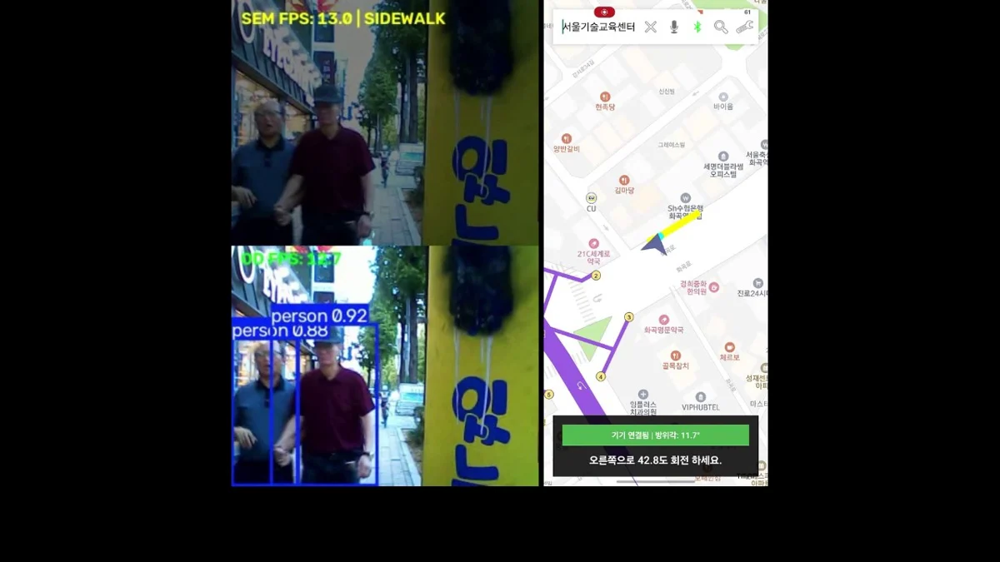

← 전체 프로젝트실외 장애물 인식과 길안내 시연 
Android / TMAP 길안내 화면
05 / EDGE SYSTEM / HAPTIC
VIP Wearable
프로토타입 구현보행 경로와 AI 인식 결과를 음성과 진동 안내로 전달하는 웨어러블

PROJECT OVERVIEW
프로젝트 개요
시각장애인의 보행 보조를 목표로 Raspberry Pi 5, IMU, 진동 모터와 Android 길안내 앱을 연결한 프로토타입입니다.
MY ROLEIMU, 햅틱 제어 및 Bluetooth, Android 연동
IMPLEMENTATION
- IMU UART 패킷 파싱과 가속도, 각속도 기반 3단계 낙상 FSM
- 낙상, 경로 회전, 장애물 상황에 따른 햅틱 우선순위 제어
- lgpio PWM 모터 제어와 AI 회피 결과 연동
- Bluetooth RFCOMM 및 TMAP, 음성 안내 Android 앱 구현
SYSTEM FLOW
시스템 구성
- 01Android / TMAP
- 02RFCOMM
- 03RPi / IMU, AI
- 04좌, 우 햅틱
TEAM & COMPONENTS
비전 모델과 AI 파이프라인은 팀원이 담당했습니다. 저는 인식 결과를 햅틱 제어에 연결하고 TMAP API, Android SDK와 lgpio를 적용했습니다.
구현 코드 확인PROBLEM SOLVING
문제 해결
문제와 접근
BLE 연결을 사용하던 중 끊김과 데이터 동기화 문제가 있었습니다. Bluetooth Classic RFCOMM으로 통신 방식을 변경했습니다. 현재 Raspberry Pi와 Android 코드에서 같은 통신 방식을 확인할 수 있습니다.
결과와 개선점
BLE에서 발생하던 연결 끊김과 동기화 문제를 줄이고, 경로, 센서, AI 정보를 상황별 진동 안내로 연결했습니다.
위치 추정과 재연결 복구에는 개선이 필요합니다. 낙상 감지 정확도와 실제 보행 안전성은 추가 시험이 필요한 단계입니다.